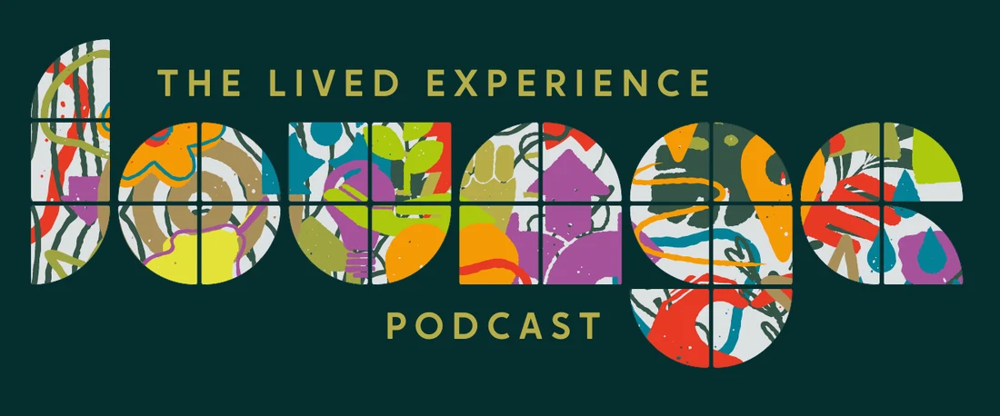

Coming January 2027
A podcast from The Care Leaders about moving from story to strategy: how lived experience shapes leadership, service design and system change.
Conversations That Care
While the Lounge gets ready, our first podcast is available now. Luke Rodgers BEM and Lived Experience Leader Karylle Phillips talk about children’s social care without the jargon: children in care, care leavers, children with a social worker, and the people and systems around them.
19 episodes across three series, covering corporate parenting, leaving care, social work, placements, and school and social care.
What it’s about
Each episode spotlights a different voice. Someone using their own experience to lead. Someone designing services in partnership with people who have lived experience. Someone commissioning and investing in this way of working.
The conversations are honest, inspiring and practical, and they all ask the same question: how do we move beyond tokenism and towards transformation?
Who it’s for
If you have lived experience and want to turn it into leadership, this is for you. If you lead a service and want to work with lived experience in a way that changes things, it’s for you too.
Your host
Luke Rodgers BEM grew up in care and has spent his career changing the services that shape it, as founder and CEO of The Care Leaders, a keynote speaker and a former Knowledge Equity Fellow at the University of Oxford. More about Luke
Be a guest
We’re looking for people who blend lived experience and leadership, design services with people who use them, or commission this way of working. Interviews are recorded online for audio and video, at a time that suits you, and usually last 45 to 60 minutes.
Tell us a little about you. We’ll read every answer and get in touch about next steps.
Thank you. We’ve got your details.
We’ll be in touch about next steps.